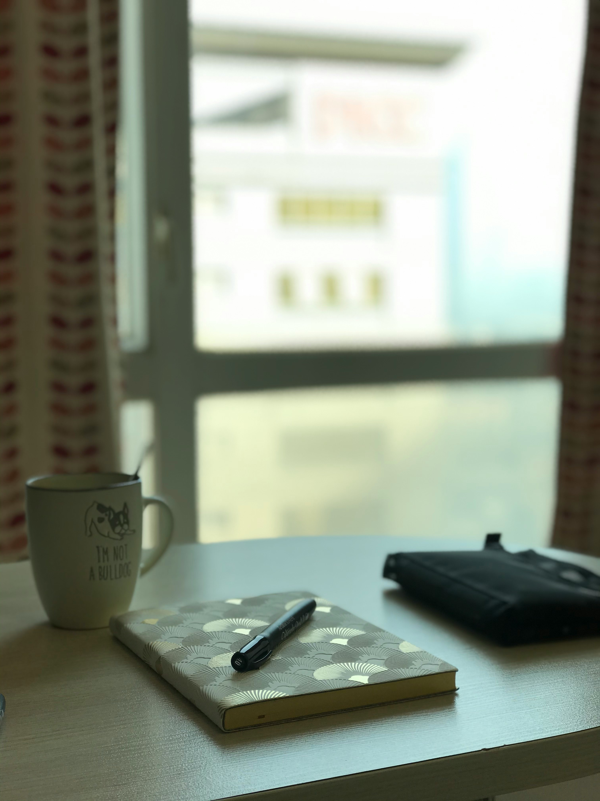
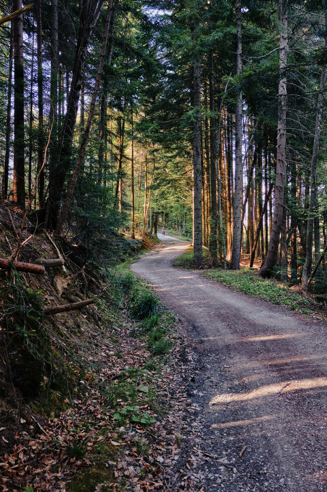

The Beauty of Starting Small
Many dream big, but few recognize the power of small beginnings. In this post, I reflect on how tiny steps can lead to massive growth over time...
Read moreA collection of thoughts, lessons, and discoveries.

Many dream big, but few recognize the power of small beginnings. In this post, I reflect on how tiny steps can lead to massive growth over time...
Read moreWith endless distractions surrounding us, maintaining focus has become an art. Here’s how I learned to embrace stillness and sharpen my attention...
Read more
Life rarely follows our plans, but sometimes detours bring the richest lessons. Join me as I recount one such experience that changed my perspective...
Read more